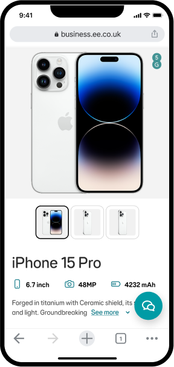
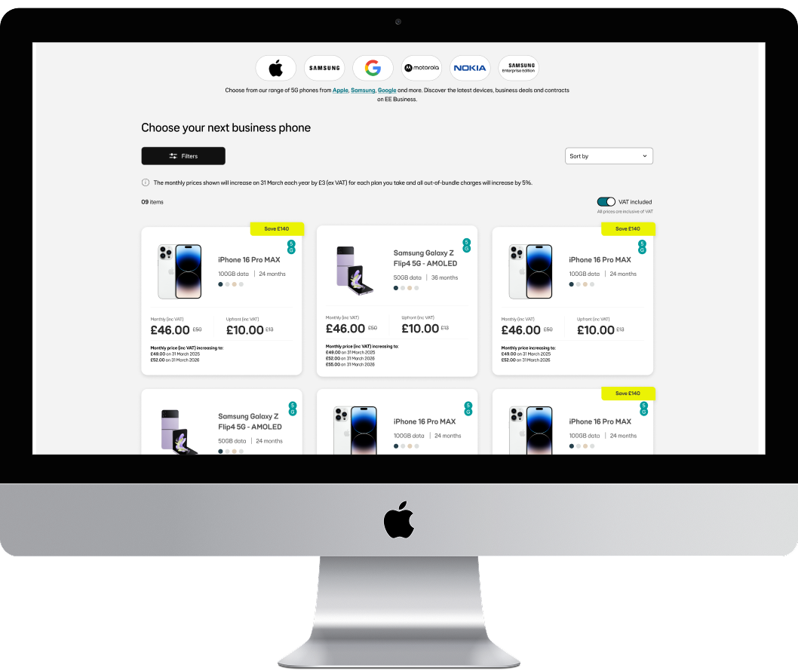

Optimisation, Migration, Product Design (UX/UI), 2024-2025
EE BUSINESS shop buy journey
The EE Business Shop project redesigned and migrated EE’s business platform, moving to a custom CMS, adapting the Loop Design System to BT’s Arc with EE theming, and improving user experience through testing and stakeholder input.
Company

EE Business
Duration
18 months
Tools used


Figma, Usertesting, Mural

